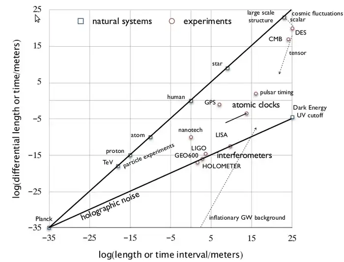

The idea
Jacob Bekenstein and Stephen Hawking showed that a black hole's entropy scales with the area of its event horizon, not its volume. Gerard 't Hooft and Leonard Susskind turned that into a principle: the maximum information in a region is bounded by its surface area, so a three-dimensional world could be a complete description of physics on a two-dimensional boundary.
Maps, diagrams and images



In 1997, Juan Maldacena made it concrete. Type IIB string theory in anti-de Sitter space is exactly equivalent to a conformal field theory on its boundary. Two theories, different dimensions, same physics — a duality.
What has actually been achieved
AdS/CFT is not speculation in the sense that matters: it is a calculational tool that has been checked in many limits, and it has been used to compute properties of strongly interacting plasmas that match experiment.
It also gave the field its most productive metaphors: entanglement entropy as geometry, the Ryu–Takayanagi formula, ER=EPR, and the black-hole information paradox reframed as a question about how information is encoded in the boundary.
AdS is not our universe. Anti-de Sitter space has a negative cosmological constant; ours has a small positive one, which means our cosmos is closer to de Sitter space. There is no established holographic dual for de Sitter space.
'We live in a hologram' is a different claim. It requires the duality to hold for our universe, which nobody has shown. The mathematics supports the principle in a model; it does not establish that the model is reality.
Area scaling is suggestive, not decisive. The entropy bound is a real result. Turning it into 'reality is a projection' is an interpretation, and it is not the only one.
Why it is worth understanding anyway
Because it changes what physicists mean by 'fundamental'. In a duality there is no fact about which side is real — the two descriptions are the same theory in different variables, and that is a genuinely new kind of physical statement.
It is the best current example of the archive's rule: a beautiful mathematical result, widely used, frequently over-claimed in popular accounts. The dossier on quantum oddities covers the related habit of reading interpretations as discoveries.
Sources for this page
- Maldacena (1998), the AdS/CFT correspondencearxiv.org
- Wikipedia, “Holographic principle” — statement, evidence, limitsen.wikipedia.org
- Bekenstein (1973), black holes and entropyjournals.aps.org
- Susskind, The Black Hole War — the principle's development, for general readersen.wikipedia.org
Open resources on this topic
- BookEpica - The Holographic Principle [Digital Booklet] — Epica (Internet Archive, free to read)
- BookThe Holographic Principle and the Early Universe — ['F. Canfora', 'G. Vilasi'] · 2005 (Internet Archive, free to read)
- BookBlack hole entropy and the holographic principle — José P. S. Lemos · 2007 (Internet Archive, free to read)
- PapersOpen-access articles: DOAJ · PubMed Central · Internet Archive Scholar
- BooksPublic-domain and borrowable copies: Open Library · Project Gutenberg · Google Books
More images
Cite this page
Momin, S. (2026). The Holographic Principle. The Larger World Archive. https://drsamonline.github.io/LARGE_GLOBE/holographic-principle.htmlMomin, Sohil. “The Holographic Principle.” The Larger World Archive, 2026, https://drsamonline.github.io/LARGE_GLOBE/holographic-principle.html.Momin, Sohil. “The Holographic Principle.” The Larger World Archive, 2026. https://drsamonline.github.io/LARGE_GLOBE/holographic-principle.html.@misc{the2026holographic,
author = {Momin, Sohil},
title = {The Holographic Principle},
year = {2026},
howpublished = {The Larger World Archive},
url = {https://drsamonline.github.io/LARGE_GLOBE/holographic-principle.html},
note = {Last reviewed 20 November 2026}
}Last reviewed 20 November 2026 · Corrections policy · this page is not peer reviewed